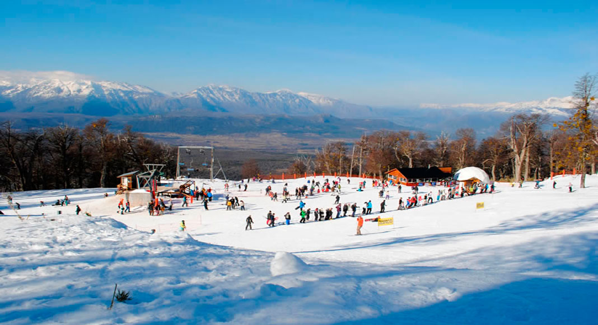

Desde hace más de 10 años, Luces de Cordillera produce contenidos periodisticos en el ambito de la Comarca Andina. Destacan Orsai Revista, una revista en papel y formato digital sobre la actualidad deportiva de la región; Fanaticos por Nuestro Deporte, un programa de televisión deportivo y turistico que se emite en 15 canales de todo el país y La Orsai Deportiva, un tira deportiva radiofonica que se encuentra entre las más escuchadas de la región.
